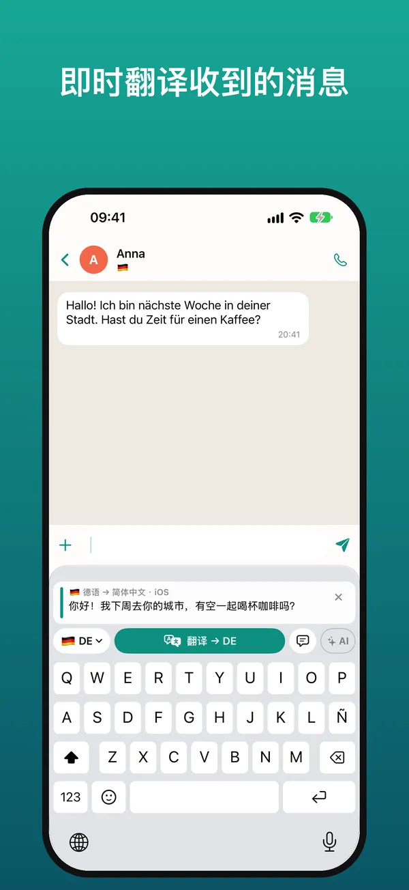
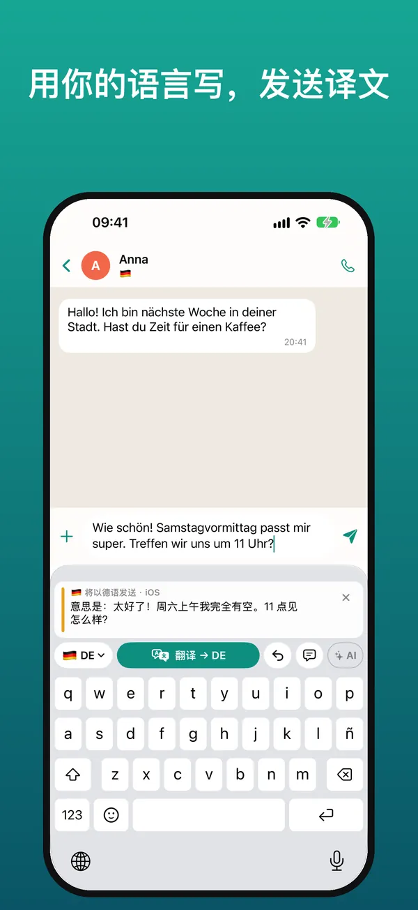
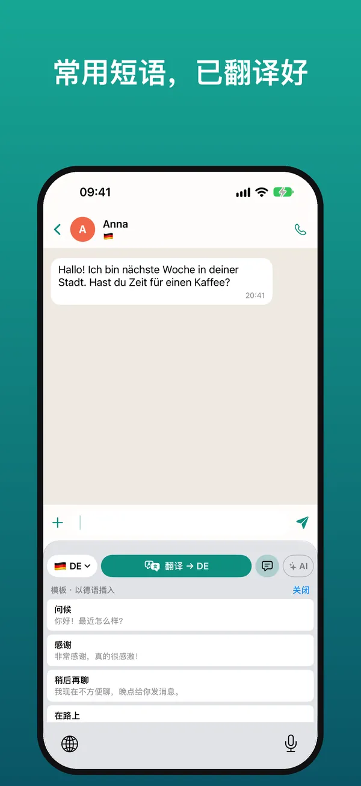
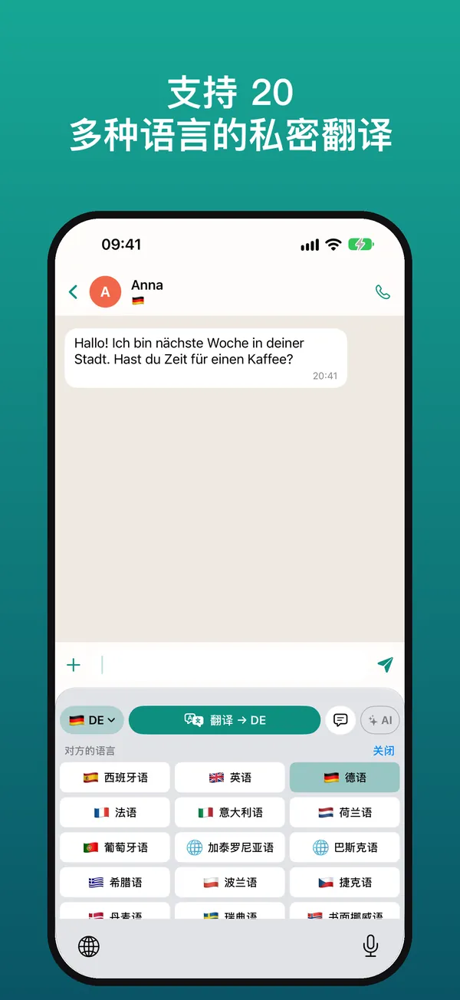

用任何语言聊天的翻译键盘
在 WhatsApp、Telegram、Instagram 或任何 App 中，直接用你的语言阅读对方的消息，并用对方的语言回复。翻译在你的 iPhone 上完成。
免费试用 7 天 · 需要 iOS 26 或更高版本的 iPhone

使用方法
按住收到的消息并点按“拷贝”，键盘会立即把它翻译成你的语言。
像平常一样写回复，然后点按“翻译”：文字会被替换为译文，可直接发送。
下方会显示你的消息在你的语言中的意思，让你放心发送。



与任何人交流所需的一切
看懂收到的消息，并用对方的语言回复。
WhatsApp、Telegram、Instagram、Messenger、邮件……凡是能打字的地方都能用。
保留语气和各语言的称呼习惯，并结合对话上下文。
使用 Apple 在 iPhone 本机的翻译：可离线、无广告、无追踪、无需账户。
接入你自己的 Claude、Gemini 或 ChatGPT 密钥，翻译更加自然。
插入时已翻译好的模板，以及用于名称和表达的术语表，并通过 iCloud 同步。
支持 20 多种语言
中文、英语、西班牙语、德语、法语、意大利语、葡萄牙语、荷兰语、加泰罗尼亚语、巴斯克语、希腊语、波兰语、捷克语、丹麦语、瑞典语、挪威语、芬兰语、罗马尼亚语、匈牙利语、乌克兰语、俄语、土耳其语、阿拉伯语和日语。
价格
使用键盘打字始终免费。可随时在 iPhone 设置中取消订阅。各地区价格可能不同。
常见问题
可以在 WhatsApp 中使用吗？
可以。凡是能打字的 App 都能使用：WhatsApp、Telegram、Instagram、Messenger、Gmail、LinkedIn 等。
免费吗？
可免费试用 7 天。之后每月 2.99 欧元或每年 19.99 欧元，或一次性支付 39.99 欧元。使用键盘打字始终免费。
为什么需要“允许完全访问”？
iOS 要求开启此项，键盘才能读取你拷贝的消息、在你开启 AI 时使用 AI，并与 App 共享设置。它不会保存或发送你输入的内容。
可以离线使用吗？
可以。使用 Apple 翻译时，下载语言后即可在 iPhone 上离线翻译。
支持哪些语言？
20 多种，包括英语、西班牙语、德语、法语、意大利语、葡萄牙语、荷兰语和日语。
有安卓版吗？
目前仅支持 iOS 26 或更高版本的 iPhone。
一分钟即可上手
- 安装 App 并打开入门指南。
- 在 iOS 设置 → 键盘中，开启键盘和“允许完全访问”。
- 在任意聊天中，按住 🌐 并选择该键盘。
- 复制收到的消息即可阅读译文；用你的语言书写并点按“翻译”。
需要帮助？请写信至 soporte@sherpastime.com.